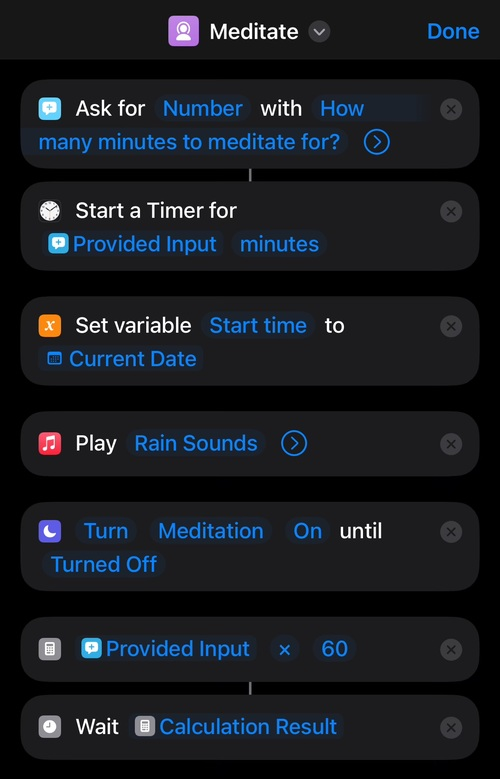
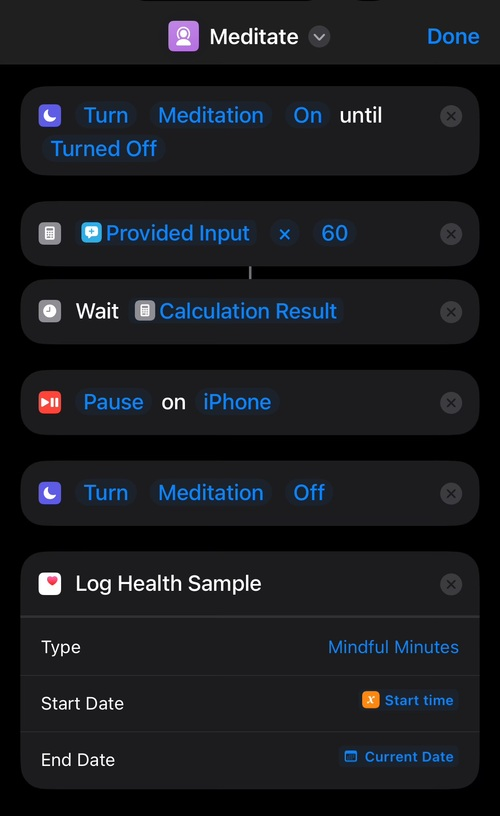

Meditation timer with Apple Shortcuts
I’ve meditated on and off for at least 10 years or so (since ca. 2013) at this point. I started when I was living in New York and noticed that my days were often full of busyness and I rarely take the time for breaks and slowing down. I would generally describe myself as pretty far on the introvert side and while I wouldn’t say I’m shy or overly awkward (anymore) in social settings, I definitely need quiet time and being alone with my own brain to recharge. I had heard a lot about meditation then through work benefits but also friends and people in my social media circles about their practice. So while it wasn’t a completely new topic to me, I still had never done it and no idea where to start. But lots of people were recommending Calm as their favorite app for meditation. And since the app had a lot of “tutorials” and guided meditation courses it seemed like a pretty good way to start. So I downloaded the app and got started and really liked it. The guided meditation courses worked well for me to give me an understanding of what the intention of meditation was and also clear up some common misconceptions (looking at you “don’t think about anything”). And pretty quickly I made meditation a regular habit. Sometimes longer and sometimes shorter sessions. Often on the ferry ride home after work, which was an extra magical setting for me. And I got a yearly subscription to Calm as my constant companion for meditation.
Over time and with a couple of life events, work changes, and moving countries happening my practice also changed. I had long periods over the last years where I didn’t meditate at all because it would slip my mind or not fit in the day. And while I’ve been meditating again almost daily for the last year or so I also changed my practice away from the guided meditations and towards exclusively using what the app called “Timed Meditation” that is just planning rain sounds (or any other sound from a collection) and stops after a configured amount of time. Basically Calm had been reduced to a fancy timer with rain sounds and apple health integration to record mindfulness minutes for me. Which is fine, I think it was doing a decent job, setting aside the fact that recording mindfulness minutes for open ended meditations (those that just keep on going until you hit stop yourself) just broke at some point and support didn’t seem to care much about it. The 40 Euros a year seemed a bit unnecessary to me but also not enough to worry about it.
But then I randomly stumbled upon the app in the App Store. And since I first downloaded the app all these years ago, Apple added the so called “App Privacy” section that details what kind of data an app is gathering and using as per their privacy policy. And that section for Calm presented me with this:
And it seemed like a fairly “un-zen” amount of data collection for a fancy meditation timer with rain sounds to me. I had already been in a mindset for a while where the overeager data collection of a lot of modern software was annoying me. And I didn’t want to think about that while meditating at all. So I very quickly decided to deinstall the app and cancel the subscription.
But since I don’t want to stop meditating and having a timer like that has been really helpful. I wanted a replacement. But I also didn’t want to have to deal with researching a new app and then maybe have them also change privacy policies at some point. I was also curious how much the “fancy timer with rain sounds and HealthKit integration” quip was actually true for me. And so I thought if that is true I should be able to build an equivalent workflow in the Shortcuts app. So I searched for an album with rain sounds on Apple Music and started clicking together a Shortcuts workflow. And to my surprise with a bit of tinkering and about 15 minutes I managed to finagle something together.
The workflow basically does these steps:
- Ask for how many minutes I want to meditate
- Set a timer for the amount
- Start playing the rain sounds album
- Enable the “Meditation focus” that turns off notifications
- Then waits the number of minutes
- After time is up it stops the music
- Disables the meditation focus
- And then logs the amount of time as “Mindfulness Minutes” in HealthKit
The screenshots below show what it looks like in the shortcuts app.
 
And I then tried out the workflow and it really works for me. Granted this doesn’t really have any of the advanced options, there’s no guided meditation, no fancy landscape pictures it shows, there is no open ended meditation option. But for my habit of meditating it does exactly what I need without gathering a whole bunch of data about me that I haven’t configured to be recorded.
It’s a bit bittersweet because I’ve been using Calm for so long. But for me the trade-off of giving all this data to another company wasn’t worth it, especially since I already pay for the product. And this Shortcuts workflow feels like a very nice and adaptable alternative.